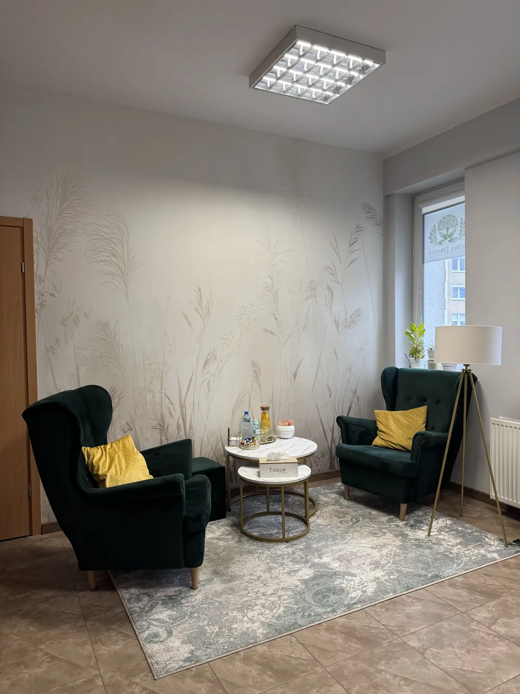

mgr Katarzyna Tokaj-Czaja
Pedagog, Certyfikowany Specjalista Psychoterapii Uzależnień
Poradnia terapii uzależnień i współuzależnienia · Barlinek
Pomagamy osobom uzależnionym i ich bliskim. Spokojnie, bez oceniania.

Spokojna rozmowa w gabinecie, tylko we dwoje.
Jeśli nie możesz przyjść, spotkamy się przez internet.
Pomoc dla osób współuzależnionych i bliskich.
Pedagog, Certyfikowany Specjalista Psychoterapii Uzależnień

Pedagog, Certyfikowany Specjalista Psychoterapii Uzależnień
Specjalista Psychiatrii
Wizyty są refundowane przez NFZ. Skierowanie nie jest potrzebne.

Nie, skierowanie nie jest potrzebne.
Wizyty są refundowane przez NFZ.
Najlepiej osobiście w poradni, a jeśli się nie da, zadzwoń albo napisz maila. Czas oczekiwania zależy od kolejki NFZ.
Tak, oczywiście. Pomagamy także bliskim osób uzależnionych.
Tak. To, co jest mówione w gabinecie, zostaje w gabinecie.
Tego nie da się z góry określić. Zależy od pacjenta, jego zaangażowania i problemów, z którymi przychodzi.